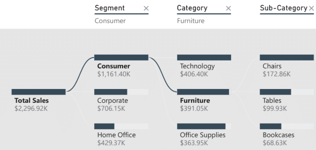

Projects
📊 Power BI Sales Dashboard
Interactive Power BI dashboard analyzing regional sales trends and forecasting revenue performance.
View Report🤖 Python Automation Script

Automated data cleaning and reporting workflow using Python, saving hours of manual work weekly.
View on GitHub🧠 Machine Learning Model

Predictive model built using Python & scikit-learn to forecast customer churn and behavior.
Explore Project📈 Power BI Financial Dashboard

Designed a financial performance dashboard with KPI tracking, variance analysis, and dynamic visuals.
View Report🧹 Data Cleaning Pipeline (Python + SQL)

Built a fully automated ETL pipeline integrating Python and SQL for consistent, repeatable data cleaning.
View on GitHub📬 Email Automation Dashboard

Automated email reports generation with Python and Power BI integration for business insights delivery.
Explore Project